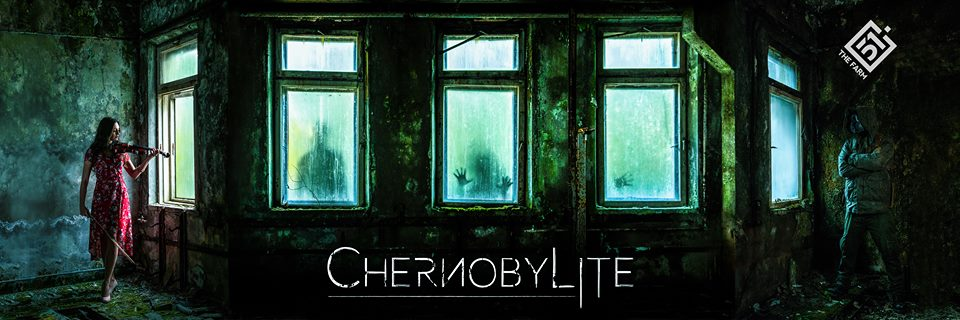

30 kwietnia 2018
The Farm 51, dla przypomnienia, to gliwickie studio stojące między innymi za takimi tytułami jak "Get Even" oraz "Chernobyl VR Project". Kilka dni temu, dokładnie w 32. rocznicę katastrowy reaktora w Czarnobylskiej Elektrowni Jądrowej, "farmerzy" ogłosili swój nowy projekt - "Chernobylite".

Póki co o tytule nie wiadomo zbyt wiele, poza tym, że będzie to survival horror osadzony w strefie wykluczenia wokół elektrowni. Biorąc pod uwagę poprzednią produkcję studia, "Chernobyl VR Project", możemy być spokojni o stronę graficzną zapowiedzianego tytułu. Pracownicy spędzili sporo czasu na miejscu w Zonie fotografując i gromadząc liczne materiały a następnie odwzorowując lokacje za pomocą fotogrametrii.
Gra powstaje na silniku Unreal Engine 4 a jedyna dostępna w tej chwili informacja to nowy FanPage na Facebooku i dość lakoniczny wpis z 26 kwietnia bieżącego roku.
Polecam zalajkowanie, bo według zapowiedzi autorów kolejne materiały pojawią się już wkrótce.